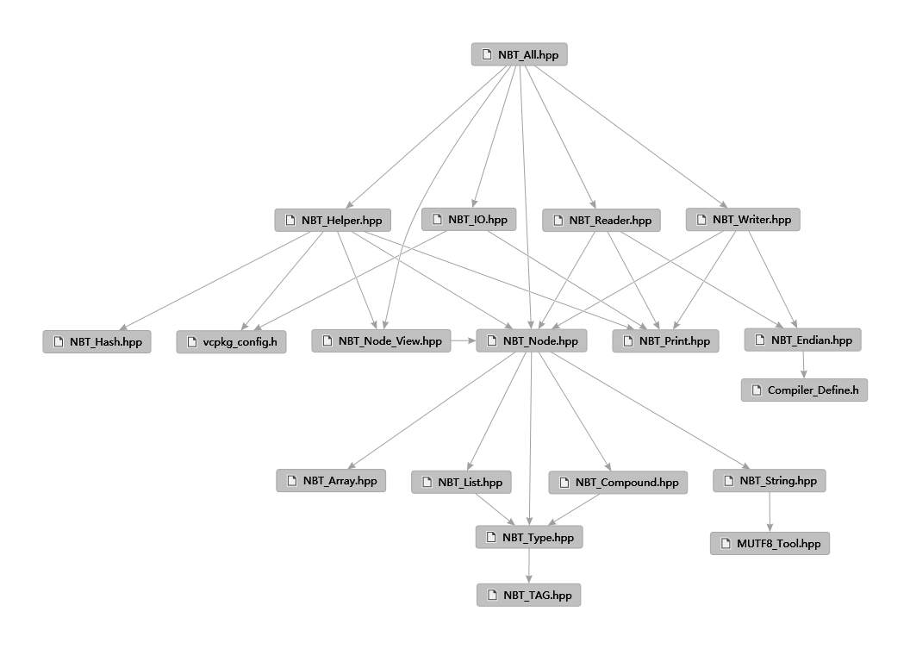

- 制作者
 1.15.0
1.15.0
|
chenjunfu2-nbt-cpp v1.0.1
一个基于CPP20的NBT(Named Binary Tag)库
|
开源库链接(Github)
最新版本上线vcpkg可能存在延迟，如果需要最新内容，请通过git仓库内的include文件夹安装
使用vcpkg安装：
一般情况下，直接使用"#include<nbt_cpp/NBT_All.hpp>"即可包含所有有头文件
具体使用示例请参见项目根目录下的"usage"文件夹内的项目
本库仅头文件，无源文件
本库仅针对nbt对象处理与nbt二进制文件处理，不涉及snbt转换与处理，不提供snbt相关功能
本库仅单线程，请不要多线程同时访问同一个NBT对象，需要多线程请加锁，或每个线程访问独立的NBT对象
如果你是通过vcpkg安装的，会自动激活依赖，请直接忽略下面内容，同时也请不要编辑vcpkg_config.h
如果你不是通过vcpkg安装的，那么在头文件vcpkg_config.h中：
配置zlib：安装zlib库则存在下面内容，否则注释下面定义
配置xxhash：安装xxhash库则存在下面内容，否则注释下面定义
在文件 vcpkg_config.h 也有相关说明
正常情况下，所有单独的可用模块都只在NBT_All.hpp中包含，
你只需要include这一个头文件，即可使用全部NBT库的功能。
如果你需要单独的模块而非要求全部模块，可以在NBT_All.hpp中查找。
任何时候，其它的头文件都有可能存在额外的依赖或互相依赖，
比如NBT_Node.hpp中就包含了其它的NBT_xxx类型，而这些类型又和NBT_Node存在相互依赖。
同时，你不应该去包含那些不在NBT_All.hpp中的头文件，除非你知道你在干什么。
比如其它的NBT_xxx类型在看到NBT_Node之前只存在前向声明，包含它们则会导致问题。
又或者NBT_Hash.hpp仅在安装xxhash库后才可用，未安装情况下直接包含则会带来错误。
你应当在包含NBT_All.hpp中的某个模块后，使用它带来的额外依赖，而不是自己去单独包含和使用其它头文件。

下面的说明，解释了NBT_All.hpp中的头文件的部分额外依赖关系，以便更好的使用此库。
这个头文件基本上包含了所有可用的NBT类型，只要包含此头文件，即可使用所有的NBT类型。 同时也包含了所有NBT类型对应的Tag（也就是enum），Tag与类型可以在编译期互相转化。 具体的类型都在NBT_Type.hpp中定义，其它的类型则是未实例化的模板形式，请不要直接使用它们。 因为这些类型需要和NBT_Node互相引用，所以在看到NBT_Node类型前，它们不应被实例化。
这个头文件仅包含NBT_Node.hpp，类似于std::string_view与std::string的关系， 它只是NBT_Node类型的View，不持有对象，仅为对象的视图，方便在一些不需要持有对象， 但是需要处理任意NBT_Node类型访问的地方使用，比如NBT_Helper中，可以处理任意对象， 但是为了处理任意对象，导致需要把当前对象拿去构造一个临时的NBT_Node（不论是拷贝还是移动）， 都太不优雅，这时候直接构造为NBT_Node_View就能以虚拟的NBT_Node（接口基本一致）形式访问。
这个头文件基本上是处理nbt对象打印、序列化、哈希的帮助函数， 不使用重载而是单独提供的原因是，cpp不方便去包装任何builtin类型并给这些类型提供各种重载， 反而是给访问做到一起才更方便。而在MC中因为用的是Java，本身提供builtin类型的包装器， 所以使用重载更为方便，此为设计模式的差异。
这两个头文件包含了NBT_Print（打印功能的默认实现，可被替换）， 同时也包含了NBT_Node，因为它们必须看见所有类型才能知道怎么读写， 最后包含了NBT_Endian，以使得不同平台能处理大小端转换， 它们基本上做的内容是差不多的，所以包含的模块也一致， 一个是从字节流中读取到NBT类型，另一个是从NBT类型中写出到字节流， 有点像std::ifstream和std::ofstream的功能。
这个头文件基本上是完成从文件中读写NBT字节流与压缩解压功能的， 是否提供压缩解压功能取决于是否安装zlib库。 基本上不存在额外的NBT库依赖，它只处理文件与字节流。
一般情况下的处理流程是这样的（这里省略报错处理流程且默认你安装了zlib库）：